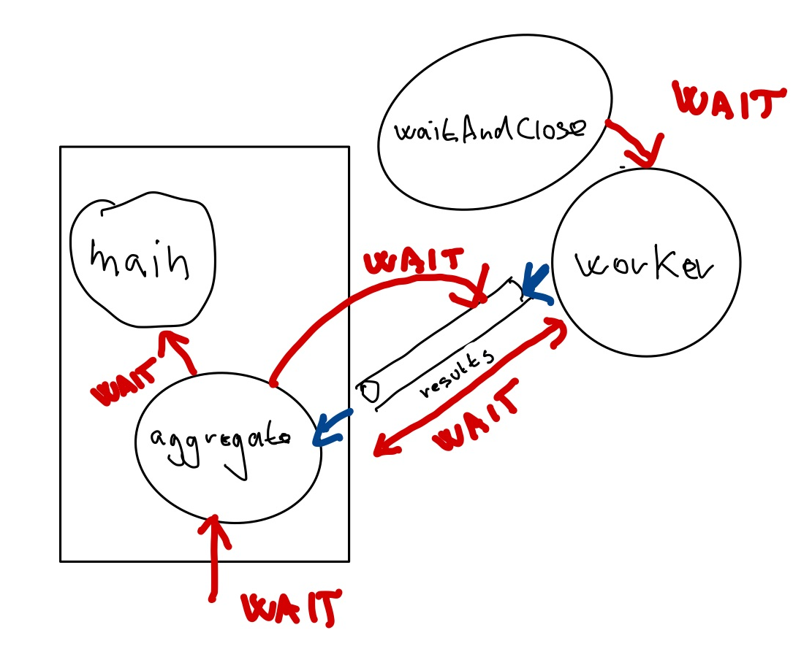

package main
import (
"log"
"time"
)
func main() {
for i := 0; i < 1000; i++ {
go func() { (1)
time.Sleep(1 * time.Second)
log.Printf(".\n")
}()
}
}Tisíc zlatých, tisíc zlatých gorutín
V minulom dieli sme spúšťali jedinú gorutinu, ale je čas pridať plyn.
Spustime tisíc gorutín, ktoré si sekundu pospia a potom vypíšu bodku.
Ukážme si zároveň, ako je možné spustiť anonymnú funkciu v gorutine.
| 1 | Spúšťame anonymnú funkciu ako gorutinu. |
Ak to však spustíme, neuvidíme nič.
Dôvodom je opäť príliš rýchla gorutina main, ktorá vypáli salvu, ale skončí skôr než korutiny, ktoré potrebujú zhruba sekundu.
Čakanie cez WaitGroup
Na jednu gorutinu sme čakali pomocou nebufferovaného kanála.
Na vyčkávanie dobehnutia viacerých gorutín sa používa WaitGroup.
V Jave je ekvivalentom CountdownLatch.
|
WaitGroup je závora s počítadlom.
Na začiatku nastavíme počítadlo na počet gorutín, ktoré očakávame. Spustíme jednotlivé gorutiny a čakáme pri závore obdivujúc počítadlo. Každá dobehnutá gorutina ho zníži o jedna a kk je počítadlo na nule, závora sa dvihne a pokračujeme v behu programu.
WaitGroup má nasledovné schopnosti:
-
Add: zvýši interné počítadlo. Používané pri spustení novej gorutiny. -
Done: gorutina po dobehnutí zníži počítadlo. -
Wait: v hlavnej gorutine čakáme, kým sa počítadlo nezníži na nulu.
package main
import (
"log"
"sync"
"time"
)
func main() {
var wg sync.WaitGroup (1)
for i := 0; i < 10000; i++ {
wg.Add(1) (2)
go func() {
time.Sleep(1 * time.Second)
log.Printf(".\n")
wg.Done() (3)
}()
}
wg.Wait() (4)
}| 1 | Pripravíme si premennú typu WaitGroup. |
| 2 | Pred každým spustením gorutiny navýšime počítadlo. |
| 3 | V rámci gorutiny indikujeme, že gorutina dobehla, čím znížime počítadlo. |
| 4 | Čakáme — blokujeme hlavnú gorutinu — kým všetkých desaťtisíc gorutín nedobehne. |
Ak to spustíme, uvidíme desaťtisíc logovacích záznamov s bodkami.
Ak chceme vidieť podrobnosti, upravme logovacie záznamy.
package main
import (
"log"
"sync"
"time"
)
func main() {
log.SetFlags(log.Ltime | log.Lmicroseconds) (1)
var wg sync.WaitGroup
for i := 0; i < 10000; i++ {
wg.Add(1)
go func() {
time.Sleep(1 * time.Second)
log.Printf("%d\n", i) (2)
wg.Done()
}()
}
wg.Wait()
}| 1 | Vypisujme mikrosekundy pri logovacích záznamoch. |
| 2 | Vypíšme identifikátor gorutiny pomocou indexu, ktorý spôsobil jej spustenie. |
|
Premenné v iterácii a premenné v gorutinách
Prostredie nás upozorní, že použitie premennej Loop variables captured by 'func' literals in 'go' statements might have unexpected values Opravme to! |
log.SetFlags(log.Ltime | log.Lmicroseconds)
var wg sync.WaitGroup
for i := 0; i < 10000; i++ {
wg.Add(1)
i := i (1)
go func() {
time.Sleep(1 * time.Second)
log.Printf("%d\n", i) (2)
wg.Done()
}()
}
wg.Wait()| 1 | Vytvorme lokálnu premennú, ktorý vyrieši problém s použitím iteračnej premennej vo vnútri gorutiny.
Toto síce vyzerá zvláštne, ale je to obvyklý trik spomínaný v oficiálnom FAQ. |
| 2 | Použijeme lokálnu premennú namiesto iteračnej z cyklu for. |
Teraz uvidíme štrúdlik výpisov:
00:11:36.038469 9988 00:11:36.038472 9990 00:11:36.038474 9994 00:11:36.038483 9998 00:11:36.038482 9996
Vidíme, že poradie výpisu sa nemusí dodržať — hodnoty sa vypisujú paralelne!
Gorutiny s výsledkom
Poďme vážiť zvieratá paralelne.
Najprv si pripravme dáta:
type Animal struct {
species string
weight int
}
var animals = []Animal{
Animal{"slon", 12},
Animal{"hroch", 4},
Animal{"nosorožec", 4},
Animal{"žirafa", 2},
Animal{"bizón", 2},
Animal{"veľryba", 190},
}Pre každé zviera pustíme gorutinu a výsledok — hmotnosť každého zvieraťa — pošleme do spoločného kanála.
Ak vieme ich presný počet, situáciu to zjednodušuje, pretože sa vieme zbaviť čakania medzi producentami a konzumentom.
|
Bufferovaný kanál (buffered channel) je kanál s konkrétnou kapacitou. Zápis do kanála blokuje len vtedy, ak je kanál plný — teda kapacita by sa prekročila. Čítanie blokuje len vtedy, ak je kanál prázdny. |
Ak vytvoríme kanál s takou kapacitou, koľko máme zvierat — napríklad 6 — šesť gorutín dokáže zapísať 6 výsledkov bez čakania na konzumenta.
Plán je teda nasledovný:
-
Vytvoríme bufferovaný kanál s kapacitou.
-
Spustíme gorutiny — pre každé zviera jednu. Každý gorutina zapíše výsledok do bufferovaného kanála.
-
Počkáme na dobehnutie všetkých gorutín cez WaitGroup.
-
Uzavrieme kanál s výsledkami.
-
Načítame jednotlivé hmotnosti zvierat a získame celkový súčet.
Vytváranie bufferovaného kanála
Bufferovaný kanál má kapacitu uvedenú v druhom argumente:
results := make(chan int, len(animals)) (1)| 1 | Pre 6 zvierat máme kapacitu kanála nastavenú na 6 prvkov. |
Potom jadro:
func main() {
results := make(chan int, len(animals))
var wg sync.WaitGroup
for _, a := range animals {
wg.Add(1)
a := a (3)
go func() { (1)
time.Sleep(1 * time.Second)
log.Printf("%s\n", a.species)
results <- a.weight (2)
wg.Done()
}()
}
wg.Wait() (4)
close(results) (5)
aggregateResults(results) (6)
}| 1 | Spustíme gorutinu pre každé zviera. |
| 2 | Do spoločného kanála zapíšeme výsledok. |
| 3 | Nezabudneme použiť trik s premennou cyklu používanej v gorutine. |
| 4 | Čakáme na gorutiny cez waitgroup. |
| 5 | Uzatvoríme kanál s výsledkami. |
| 6 | Začneme čítať výsledky v samostatnej funkcii. |
Agregácia výsledkov znamená čítanie z kanála.
func aggregateResults(results <-chan int) {
total := 0
for result := range results {
log.Printf("%d\tPartial\n", result)
total = total + result
}
log.Printf("Total: %d\n", total)
}
Nezabudnime zistiť, či čítame znižovaním počítadla s výsledkami alebo explicitným uzavretím kanála.
V príklade zatvárame kanál explicitne a používame kombináciu range a for.
|
|
Kanál slúži ako zdieľaný slice (pole) pre spoločné výsledky. Na rozdiel od bežného poľa či slice je zápis do tejto štruktúry bezpečný a nenastávajú konkurentné problémy. Na rozdiel od iných jazykov nemusíme používať mutexy či iné zámky. |
Gorutiny s neznámym počtom vstupov
Čo keď nepoznáme počet riadkov? Bufferovaný kanál nepomôže, keďže nevieme nastaviť jeho kapacitu.
Dajme si prvý nefunkčný nástrel.
func main() {
results := make(chan int) (1)
var wg sync.WaitGroup
for _, animal := range animals {
wg.Add(1)
a := animal (3)
go func() {
time.Sleep(1 * time.Second)
log.Printf("%s\n", a)
results <- a.weight (2)
wg.Done()
}()
}
wg.Wait()
}| 1 | Vytvorme komunikačný kanál, ktorým budú tiecť celé čísla int. |
| 2 | Pre každé zviera zistíme jeho hmotnosť a zapíšeme do kanála. |
| 3 | Nezabudnime na trik s premennou iterácie, ktorá sa používa v gorutine. |
Ak spustíme kód, uvidíme 6 riadkov a nakoniec pád:
fatal error: all goroutines are asleep - deadlock!
goroutine 6 [chan send]:
main.main.func1()V programe sa deje viacero vecí.
-
Gorutiny zapisujú do spoločného kanála paralelne — predstavujú producentov.
-
Kanál, ktorý používame, je nebufferovaný (unbuffered), a teda každý producent čaká (blokuje) na zápis dovtedy, kým sa z kanála nečíta.
Z kanála results však nikto nečíta — keďže sme nič také nenaprogramovali — a teda nastáva deadlock, pretože producenti (gorutiny) čakajú so zápisom na Go-dotov, ktorí nikdy neprídu.
Tento fenomén Go dokázal identifikovať počas behu, a teda ukončil program s fatálnou chybou.
Konzument výsledkov
Pripravme si funkciu, ktorá bude konzumovať výsledky čítaním z kanála.
Čítanie však musíme vedieť ukončiť, a to:
-
buď počítaním výsledkov,
-
alebo uzatvorením kanála.
Počítanie výsledkov
Začnime počítaním výsledkov. Ak vieme koľko riadkov pošleme do gorutiny, vieme tiež, koľko výsledkov očakávame.
func aggregateResults(results <-chan int, expectedResults int) { (1)
for i := expectedResults; i > 0; i-- { (2)
log.Printf("%d\tPartial\n", <-results) (3)
}
}| 1 | Berieme kanál, z ktorého čítame a počet výsledkov, ktoré prídu. |
| 2 | Načítame toľko výsledkov, koľko treba. |
| 3 | Čítame z kanála (s blokovaním) a vypisujeme. |
Hlavná funkcia potom navyšuje počítadlo úloh a po spustení gorutín zavolá agregáciu:
func main() {
results := make(chan int)
animalCount := 0 (1)
var wg sync.WaitGroup
for _, animal := range animals {
wg.Add(1)
a := animal
animalCount++ (2)
go func() {
time.Sleep(1 * time.Second)
log.Printf("%s\n", a)
results <- a.weight
wg.Done()
}()
}
aggregateResults(results, animalCount) (3)
wg.Wait()
}| 1 | Inicializujeme počítadlo riadkov. |
| 2 | S každým načítaným riadkom zvýšime počítadlo. |
| 3 | Agregujeme výsledky. |
|
Agregáciu výsledkov musíme urobiť pred čakaním na gorutiny. Ak by sme najprv čakali a potom agregovali, mali by sme deadlock:
|
Konzument výsledkov s uzatváraním kanála
Ukážme si variant, ktorý využíva uzatváranie kanála.
Pripravme si funkciu, ktorá bude konzumovať výsledky:
func aggregateResults(results <-chan int) {
for result := range results { (1)
log.Printf("%d\tPartial\n", result)
}
}| 1 | Pomocou cyklu vieme postupne čítať hodnoty z kanála. |
| Je veľmi dôležité, kde ju použijeme a ako ju použijeme. Veľmi ľahko si vieme vyrobiť deadlock! |
Tento kód niekedy fungovať bude, niekedy nie.
func main() {
results := make(chan int)
var wg sync.WaitGroup
for _, animal := range animals {
wg.Add(1)
a := animal
go func() {
time.Sleep(1 * time.Second)
log.Printf("%s\n", a)
results <- a.weight
wg.Done()
}()
}
aggregateResults(results) (1)
wg.Wait()
}| 1 | Funkciu spustíme klasicky po spracovaní výsledkov. |
Uvedený kód sa správa nepredvídateľne, napríklad:
09:28:52.615693 slon: 12 tony
09:28:52.615791 12 Partial
09:28:52.615723 nosorožec: 4 tony
09:28:52.615806 4 Partial
09:28:52.615728 veľryba: 190 tony
09:28:52.615810 190 Partial
09:28:52.615729 bizón: 2 tony
09:28:52.615813 2 Partial
09:28:52.615726 hroch: 4 tony
09:28:52.615738 žirafa: 2 tony
09:28:52.615829 4 Partial
09:28:52.615832 2 Partial
fatal error: all goroutines are asleep - deadlock!Vidíme šesť podvýsledkov a potom deadlock.
Funkcia aggregateResult číta 6 čiastočných výsledkov z kanála a potom deadlockne — začne čakať na siedmy výsledok, ktorý nikdy nepríde, pretože program sa ukončí.
Nezabúdajme, že for a range nad kanálom čaká na uzatvorenie kanála!
|
Aj tu je dôležité najprv agregovať výsledky a potom čakať na dobehnutie korutín. |
Patlanie s kódom
Ak by sme začaliť bezducho patlať a napríklad vymenili aggregateResult a Wait, nepomohli by sme si.
Nastal by deadlock iného typu — producenti by čakali na konzumenta, ktorý by sa spustil až po Wait-e, a do toho by ešte čakal aj Wait (má to v popise práce).
Uvoľnenie deadlockov
V kóde máme v skutočnosti tri druhy aktériek: hlavnú gorutinu (main), sadu gorutín a funkciu aggregateResult.
Každá čaká na každého, čo musíme rozseknúť.
-
Hlavná gorutina čaká vo
Waitna dobehnutie vážiacich gorutín. -
Vážiace gorutiny čakajú na konzumovanie z
aggregateResult(cez nebufferovaný kanál). -
Funkcia
aggregateResultv hlavnej gorutine čaká na výsledky z gorutín a ešte na uzatvorenie kanála.
| Riešenie je spustiť ešte jednu aktérku v gorutine. |
Čakanie na gorutiny v gorutine
Jeden z trikov použije čakanie na WaitGroup a následné uzavretie kanála v samostatnej gorutine.
func main() {
log.SetFlags(log.Ltime | log.Lmicroseconds)
results := make(chan int)
var wg sync.WaitGroup
for _, animal := range animals {
wg.Add(1)
a := animal
go func() {
time.Sleep(1 * time.Second)
log.Printf("%s: %d tony\n", a.species, a.weight)
results <- a.weight
wg.Done()
}()
}
go func() { (1)
wg.Wait()
close(results) (2)
}()
aggregateResults(results)
}| 1 | Čakanie na dobehnutie WaitGroup uskutočníme v gorutine. |
| 2 | Ak gorutiny dobehnú, máme garantovane všetky výsledky zapísané do výstupného kanála a môžeme ho zatvoriť. |
Stav je nasledovný:
-
Gorutiny vážiace zvieratá blokujú pri zápise, kým
aggregateResultnezačne čítať z kanála a naopak. To je v poriadku. -
Čakanie na dobehnutie gorutín cez
WaitGroupsa deje v samostatnej gorutine, ktorá neblokuje čítanie výsledkov zaggregateResult. Slovom,mainnaposiela salvu údajov a obratom začne čakať na výsledky vaggregateResult. -
Ak všetky vážiace gorutiny dobehli, zatvoríme kanál a tým odblokujeme čakanie na koniec vo funkcii
aggregateResults. -
Funkcia
aggregateResultpri čakaní na koniec kanála zároveň zabraňuje predčasnému ukončeniu programu.
|
Čítanie a zápis do kanála z rovnakej gorutiny vedie k deadlocku. Uzavretie kanála cez |
Upratovanie v kóde
Upracme ešte v kóde. Predovšetkým, kódy v korutinách odsuňme do samostatných funkcií.
Založme funkciu pre gorutinu:
func worker(a Animal, results chan<- int, wg *sync.WaitGroup) { (1)
time.Sleep(1 * time.Second)
log.Printf("%s: %d tony\n", a.species, a.weight)
results <- a.weight
wg.Done()
}| 1 | Nezabudnime posielať WaitGroup ako pointer. |
Funkcia aggregateResult bude naozaj agregovať:
func aggregateResults(results <-chan int) {
total := 0
for result := range results {
log.Printf("%d\tPartial\n", result)
total += result
}
log.Printf("%d\tTotal Weight\n", total) (1)
}| 1 | Vypíšeme celkový výsledok. |
Čakanie na WaitGroup bude v samostatnej grupe.
func waitAndClose(wg *sync.WaitGroup, results chan<- int) {
wg.Wait()
close(results)
}Hlavná funkcia sa sprehľadní.
func main() {
log.SetFlags(log.Ltime | log.Lmicroseconds)
results := make(chan int)
wg := new(sync.WaitGroup) (1)
for _, animal := range animals {
wg.Add(1)
a := animal
go worker(a, results, wg) (2)
}
go waitAndClose(wg, results) (3)
aggregateResults(results) (4)
}| 1 | WaitGroup inicializujeme rovno ako pointer. |
| 2 | Funkciu pre váženie zavoláme ako gorutinu. |
| 3 | Čakanie na výsledky tiež pôjde v gorutine |
| 4 | Agregácia na výsledky nemusí ísť v gorutine, tá blokuje pri čakaní na zápis z gorutiny pre worker-ov. |

Všimnime si, ako sme sa zbavili cyklov; nestane sa, že aktér čaká na iného aktéra, ktorý naňho nepriamo tiež čaká.